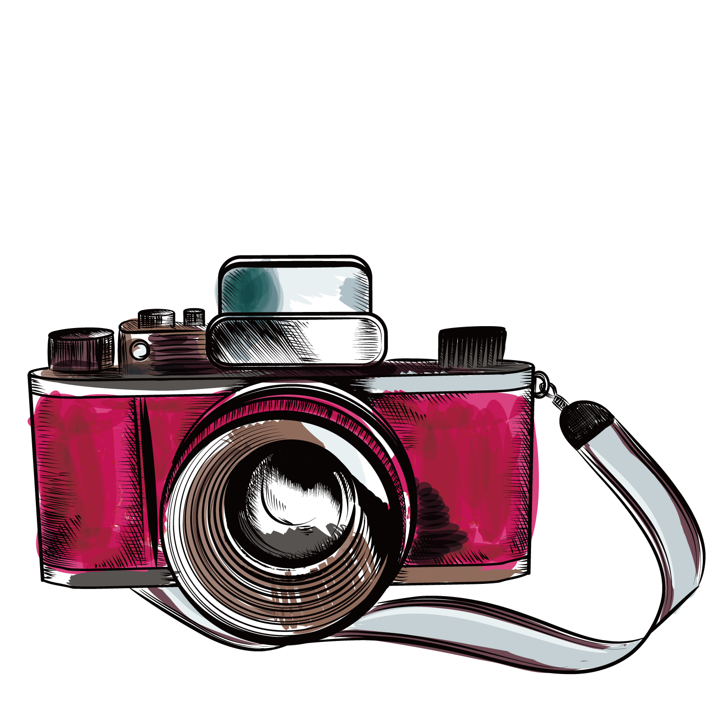
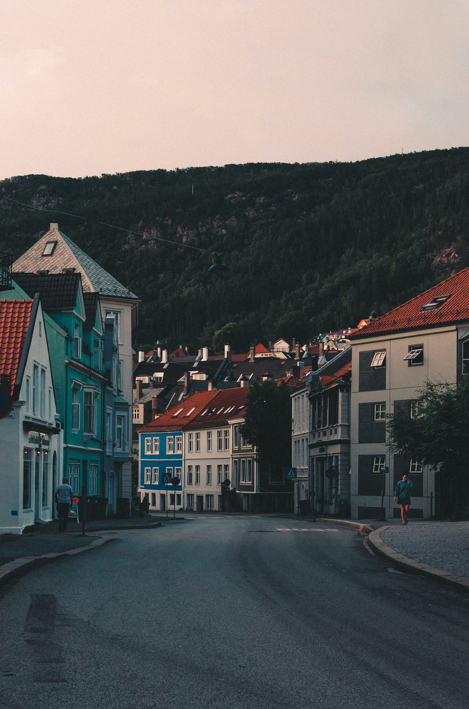

What is
Photography
To understand the photography definition it is important to break down the word itself. The Greek meaning of ‘photo’ translates to ‘light’ while ‘graphy’ translates to ‘drawing’. Therefore, the word photography can quite literally translate to light drawing or drawing with light. Simply put, photography is the process of capturing light to create an image. This is executed through the use of a camera, either film or digital. The practice of capturing light to create images is used for various purposes.

How does photography work
The photography definition may give a general breakdown of what photography is, but how does photography work specifically and how is light captured to create an image? To understand this, you must understand the exposure triangle. Ever since the invention of photography and the invention of the camera, these three components of photography have been critical in creating images from light.
Aperture
Aperture is the opening of the lens through which light passes. When you hit the shutter release button to take the picture, the camera aperture opens to the predetermined width, letting a specific amount of light through.
ISO
Once light passes through the aperture of a camera lens, it lands on either a sensor (in digital photography) or light sensitive film stock (in film photography). ISO is what measures your camera’s digital sensor’s sensitivity to light or your film stock’s sensitivity to light.
Shutter Speed
The final component of the exposure triangle is shutter speed. Shutter speed is how long the camera shutter is open, exposing the image to light, typically measured in milliseconds to minutes.
Tobias Bjørkli
Gallery
.jpg "Norwegian landscape")
.jpg "Norwegian landscape")
.jpg "Norwegian landscape")
.jpg "Norwegian landscape")
.jpg "Norwegian landscape")
.jpg "Norwegian landscape")
.jpg "Norwegian landscape")
